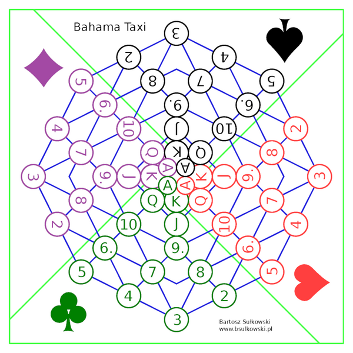
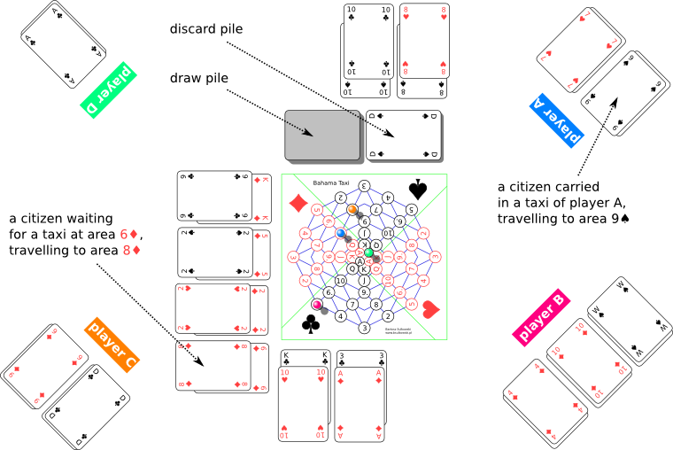

Bahamataxi
Board Game Arena 官方规则文档
Introduction
Bahama Taxi is played by 2 to 4 players, who become taxi drivers in some city. They compete to gather the highest income by carrying passengers.
Required stuff
- the board
- standard 52-card deck
- distinguishable pieces (one for each player)
- a paper and a pencil
Board

The board depicts a scheme of road connections in a city. It consists of 52 areas, enumerated with card symbols.
On each of four parts of the board there are areas for distinct card suit (♠, ♥, ♣, ♦).
Congested city core, called Downtown, is reflected by areas in the middle of the board, enumerated with ranks (A, K, Q, J).
Two given areas are adjacent, whenever they are connected with a line or touch each other.
- Example pairs of adjacent areas
- 5♦, 2♠
- Q♠, A♠
- A♣, K♣
- Example pairs of areas, that are not adjacent
- 3♥, 5♥
- A♠, A♣
Note: BGA implementation uses 4-color playing cards and 4-color game board to enhance visibility.
Taxi movement
Each player controls one taxi. A taxi is represented by a piece placed on a board area. Only a single piece is allowed to occupy a given area.
Players take turns. On their turn, a player must move their taxi to any unoccupied adjacent area.
Note: In BGA implementation, taxi movement is obligatory to make the game more dynamic and to prevent players from stalling the game, especially during late game phases.
Passengers
Citizens are not in a hurry. Whenever one of them wants to get from area X to area Y, they take their time waiting on X for any taxi to pick them up. Then they travel until dropped off at their destination Y. Passengers give no suggestions about taxi route and leave it all to the driver.
A player receive fares for getting a passenger to their final destination, proportional to the distance between areas X and Y. The distance is measured as a number of taxi movements needed to get from X to Y via the shortest route. Neither actual route nor driving time affects fares at all.
Any citizen, who is trying to catch a taxi or travel as a passenger, is represented by a pair of cards, lying face up one on another. The bottom card stands for area X, while the top one for area Y. A pair of cards for citizen waiting on area X is placed by the board, on the X color side. A pair of cards for citizen being a passenger of given player taxi is placed in front of the player. A pair of cards for citizen who has been dropped off at final destination is discarded on the discard pile.
Note: In BGA implementation, meeples are placed on the lower right corner of corresponding spaces, and highlights/tooltips are added, instead of placing cards on corresponding color sides.
A taxi can carry up to 3 passengers at one time. A player can pick up a citizen with their taxi on the end of their turn, if the taxi is placed on the same area the citizen is waiting. A player can drop off a citizen on the end of their turn, if the taxi is placed on the same area the citizen is travelling to.
Ingame situation example

- Comments
- Player A can move their taxi to area 6♦ and pick up the citizen waiting there as a third passenger.
- Player A can move their taxi to area 9♠ and drop off one of passengers.
- Player B can move their taxi to area 2♦. They can’t pick up the waiting citizen, because they are already carrying three passengers.
- Player C can’t move their taxi to area 10♦, because it is occupied by another taxi.
Player C can wait on area 8♠ and pick up waiting citizen as a third passenger.- As the note from Taxi Movement, Player C must move in BGA implementation, thus cannot pick up waiting citizen on 8♠.
- Player D can’t move taxi to area A♣, because it is not adjacent to area A♠.
| area, where a citizen is waiting for taxi | destination area | fare |
|---|---|---|
| 8♠ | 8♥ | 3 |
| 10♠ | 10♣ | 4 |
| K♣ | 10♥ | 2 |
| 3♣ | A♦ | 5 |
| K♦ | 9♣ | 3 |
| 5♦ | 2♠ | 1 |
| 2♦ | 2♥ | 7 |
| 6♦ | 8♦ | 2 |
Random element in game
At the beginning of the game, the whole deck is shuffled and placed face down by the board, becoming the draw pile.
Each player discovers the initial position for their taxi, drawing a card from draw pile. Used cards are discarded face up on the discard pile.
A citizen waiting for a taxi is added by drawing a pair of cards from the draw pile and placing it properly by the board. This way 8 citizens are added initially. Whenever any citizen is picked up by a taxi, a new random citizen is added, but only if there are enough cards in the draw pile.
Note: In BGA implementation, a card is discarded in 3-player game during setup to make the number of cards in the deck even.
Final phase of game
Once the draw pile runs out of cards, a player is not permitted to pick up a third passenger. They can still carry three passengers if they have been picked up already.
Note: BGA implementation marks drawn cards by gray border around corresponding spaces of the game board. If all spaces are gray-bordered, the deck is exhausted.
Once there are no more than 4 citizens waiting for a taxi, a player is not permitted to pick up a second passenger. They can still carry two passengers if they have been picked up already.
As soon as there are no citizens waiting for a taxi, the game is over and players’ income is compared. A player does not receive any income for passengers left in their taxi.
Note: The game also ends automatically when all players drop off all passengers while there is only a single passenger waiting a taxi. Since the last passenger cannot be dropped off, this game end does not change the end game result.
Variant rules
BGA implementation supports variant rules which are not included in original rules.
Default options are bolded.
Shift change
- No: Players start the game with an empty taxi.
- Yes: Players start the game with a full taxi.
Pickup before movement
- No: Players cannot pick up a passenger on the same space before taxi movement.
- Yes: Players can pick up a passenger on the same space before taxi movement. This rule is not applied when the deck is exhausted.
Faster movement
- No: A taxi may move only once per turn. Taxi movement is mandatory.
- Fast: A taxi may move up to twice per turn. During 1st/2nd deadline all taxis gain 1/2 extra movements.
- Faster: A taxi may move up to three times per turn. During 1st/2nd deadline all taxis gain 2/4 extra movements.
Players may undo taxi movements up to 5 times per turn.
In all variants, a taxi must move at least once and cannot return to (or stay in) its starting space.
A taxi must stop movement first to pick up or drop off a passenger (unless 'Pickup before movement' variant is on). No further movement is allowed.
5-8 player variant
5-8 player games use two decks of playing cards.
- 'Pickup before movement' variant must be enabled first.
- If a starting card identical to another player's starting card is drawn during setup, set aside the card and draw another card until a unique card is drawn, then shuffle cards set aside in the deck.
- When a player has a legal space in their cab and there are two passengers at the origin point, the player can pick up 0, 1, or 2 passengers (to a maximum of 3 passengers in the taxi).
- When a player has two passengers in their cab with the same exact destination spot, the player drops off both passengers simultaneously and scores both.
- When a pair of identical cards are drawn while generating a passenger, the pair is discarded immediately and a new pair of cards is drawn until a passenger is generated or the draw deck is exhausted.
Attribution
BGA implementation of Bahama Taxi and variant rules are derivatives of "Bahama Taxi" by Bartosz Sułkowski, used under CC BY 4.0.